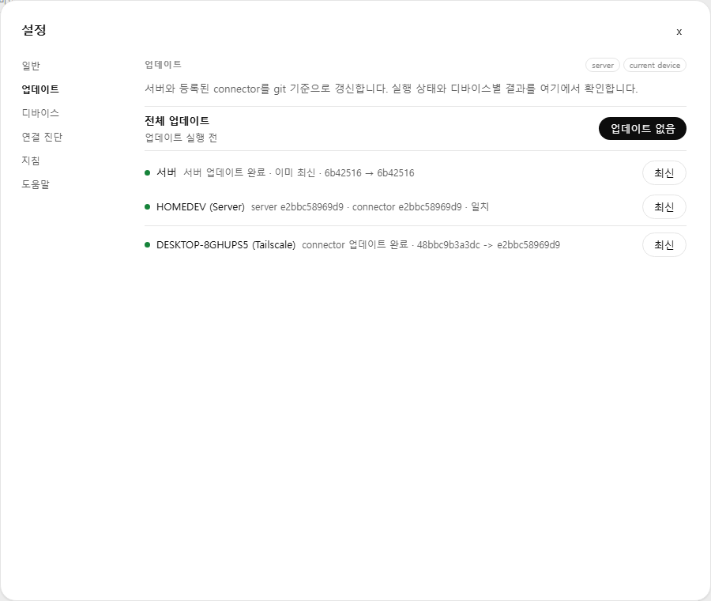
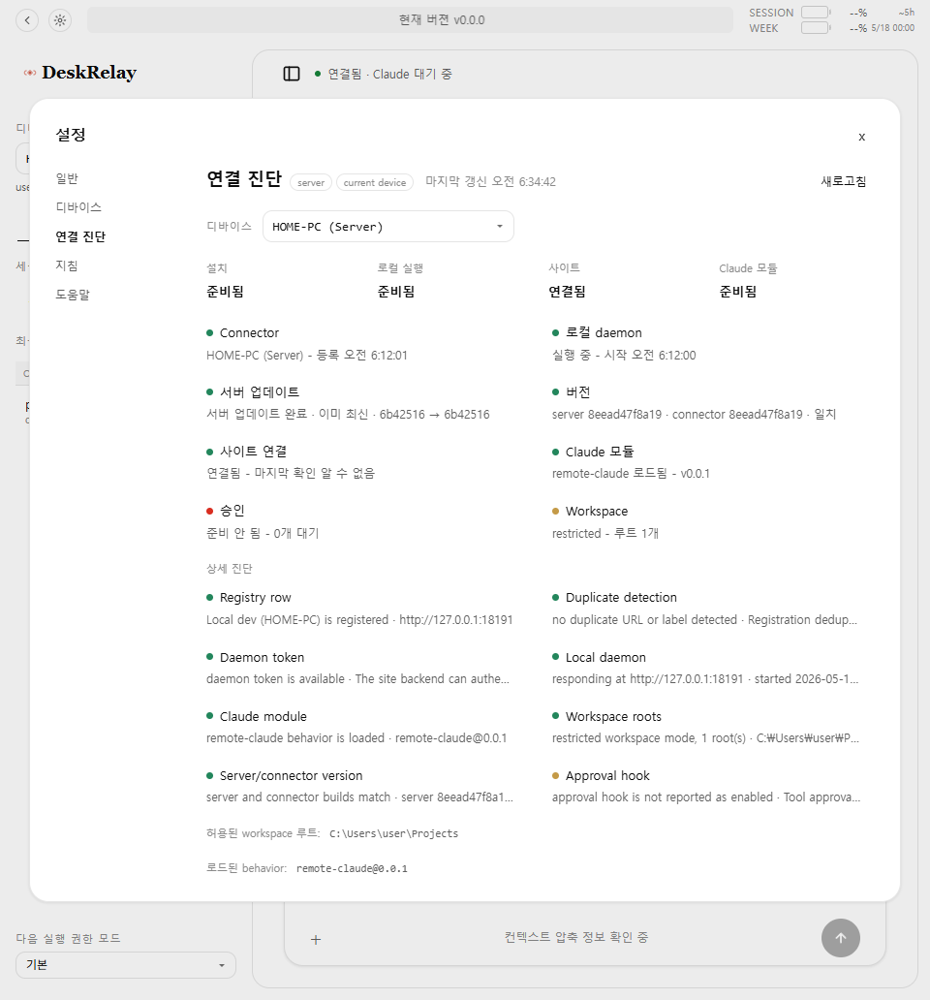
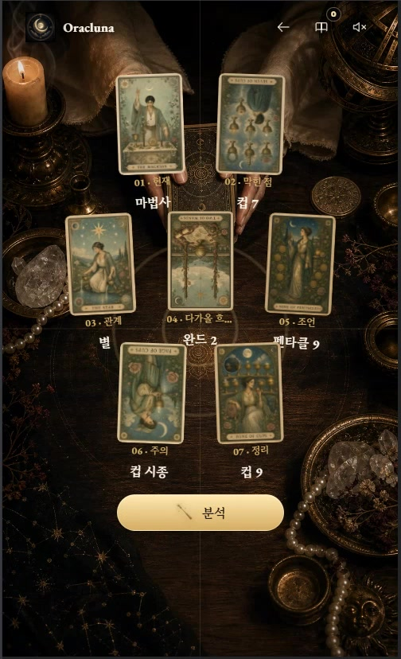

self-host control plane
DeskRelay
Browser and mobile control for Claude Code running on your own PCs, with connector registration, update visibility, diagnostics, and explicit trust boundaries.
read caseThis section collects the AI side of my portfolio: DeskRelay as a self-host developer control surface, Oracluna Tarot as a mobile RAG product, Ops-Cure as an agent operations kernel, and GenWorld as local LLM behavior R&D.

DeskRelay is the clearest example of my current AI work style. I built it through Claude Code full-vibe coding, but the important part is the operating model around it: manager and worker roles, project instructions, state boards, failure recovery, UX language, and repeated validation against real use.




Browser and mobile control for Claude Code running on your own PCs, with connector registration, update visibility, diagnostics, and explicit trust boundaries.
read case
A mobile reading flow connecting a question, shuffle, cut, direct selection from all 78 cards, grounded interpretation, saving, and sharing.

A kernel-plus-behaviors architecture for orchestration, remote execution, and dialogue rooms. The proof is reusable state, ownership, leases, and review gates.
read case
Local LLM experimentation for NPC dialogue, prompt scaffolding, memory rules, and fallback behavior inside an interactive Unity world.
read caseI separate manager, worker, reviewer, and operator responsibilities so AI output becomes part of a controlled workflow.
I keep asking what happens when setup, registration, network state, update flow, or recovery does not follow the ideal path.
I review whether every state is actionable, whether wording is useful, and whether mobile operators can understand the system quickly.
When a surface bug appears, I pull it into architecture: diagnostics, status models, trust boundaries, test loops, and install flow.
The AI systems here sit on top of a decade of Unity/XR delivery: robotics control interfaces, BIM runtime tooling, heavy geometry interaction, and operator-facing simulation. That background is why I keep judging AI output by setup, observability, recovery, and real use.